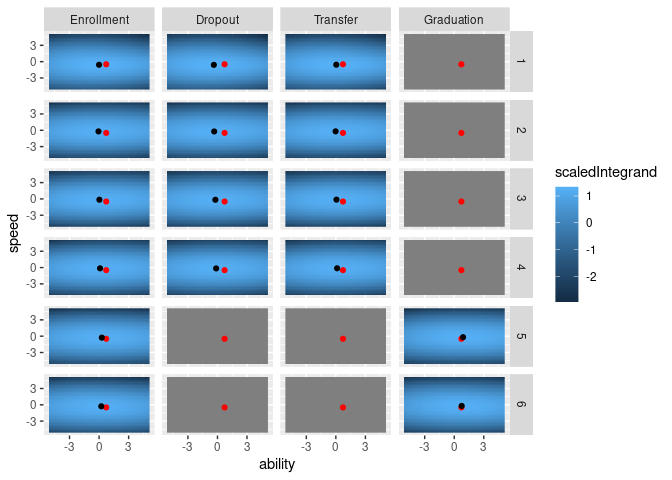

The goal of studCRIRT is …
Installation
You can install the development version of studCRIRT with:
# install.packages("devtools")
devtools::install_github("giuseppealfonzetti/studCRIRT")Evaluate the integrand
At first, we need to specify the setting dimensions
library(studCRIRT)
## change the seed to try different draws
seed <- 123
## Setup dimensions
external_covariates <- 1L # number of external covariates
years_before <- 6L # number of possible years without graduation risk
years_after <- 2L # number of possible years with graduation risk
grades <- 4L # number of grades
exams <- 10L # number of examsNow we can generate a random vector of paramaters
# dimension of the parameter vector related to the competing risk model
dim_cr <- 3*(external_covariates+2) + 2*(years_before) + years_after
# dimension of the parameter vector related to the irt model
dim_irt <- 3*exams + exams*grades
# dimension of the parameter vector related to latent variables
dim_lat <- 2
# draw a random parameter vector of the suitable length
set.seed(seed)
theta <- rnorm(dim_cr+dim_irt+dim_lat)
# To inspect the parameters we can convert theta to a named list
params_list <- paramsVec2list(THETA = theta,
DIM_EXT = external_covariates,
NYB = years_before,
NYA = years_after,
N_GRADES = grades,
N_EXAMS = exams)
# here you can manually change parameters (chek the list names)
# I do that just to simulate reasonable data
params_list[['LAT']][['Corr']] <- .5
params_list[['LAT']][['Speed_variability']] <- 1.5
params_list[['IRT']][['Exams_average_time']] <- sapply(sort(rep(1:5, (round(exams/6)+1)))[1:exams], function(x) log(x*180))
params_list[['IRT']][['Exams_variability_time']] <- runif(exams, .5,2)
params_list$IRT$Exams_slopes <- runif(exams, 0.5,1)
params_list$CR$Graduation$Slope_ability <- 2
params_list$CR$Graduation$Slope_speed <- 2
# and project them back on a new theta
theta <- paramsList2vec(PARAMS_LIST = params_list,
DIM_EXT = external_covariates,
NYB = years_before,
NYA = years_after,
N_GRADES = grades,
N_EXAMS = exams)Generate a the grades and times of a random student for the given parameters
## read latent parameters from list
rho <- params_list[['LAT']][['Corr']]
sig <- params_list[['LAT']][['Speed_variability']]
## latent covariance matrix
S <- matrix(c(1,rho*sig,rho*sig,sig^2), 2, 2)
## draw ability, speed and external covariates value
set.seed(seed+2)
lat <- mvtnorm::rmvnorm(1, sigma = S) # lat[1] = ability, lat[2] = speed
# lat <- matrix(c(.5,.5), ncol = 2)
x <- rnorm(external_covariates) # external covariates
## draw grades and times for all exams
grades_vec <- rngGrades(
THETA_IRT = theta[(dim_cr+1):(dim_cr+dim_irt)],
N_GRADES = grades,
N_EXAMS = exams,
ABILITY = lat[1],
SEED = seed
)$grades
times_vec <- rngTimes(
THETA_IRT = theta[(dim_cr+1):(dim_cr+dim_irt)],
N_GRADES = grades,
N_EXAMS = exams,
SPEED = lat[2],
SEED = seed
)
## Read the year of the last exam
yle <- round(max(times_vec)/365,0)
yle
#> [1] 5Finally, we can plot the integrand function for each outcome and year going from 1 to yle+1. Red dots represent the true latent space coordinates. Black dots the ones estimated via optim. Grey windows are related to impossible outcomes.
library(tidyr)
library(dplyr)
library(ggplot2)
library(purrr)
# grid for ability and speed divided by outcome and year
dt <- expand_grid(
ability = seq(-5,5, by=.25),
speed = seq(-5,5, by=.25),
outcome = c(0,1,2,3),
year = 1:(yle+1)
)
dtopt <- expand_grid(
outcome = c(0,1,2,3),
year = 1:(yle+1)
) |>
mutate(
opt = pmap(list(outcome, year),
function(x3,x4){
# use only exams observed up to `x4`
maxTime <- 365*x4
obs_vec <- grades_vec>0×_vec<maxTime
Rfun <- function(PAR){
-complete_likelihood(
THETA = theta,
EXTCOVARIATES = x,
EXAMS_GRADES = grades_vec,
EXAMS_DAYS = times_vec,
EXAMS_OBSFLAG = obs_vec,
EXAMS_SET = rep(TRUE, length(grades_vec)),
OUTCOME = x3,
YEAR = x4,
N_GRADES = grades,
N_EXAMS = exams,
NYB = years_before,
NYA = years_after,
ABILITY = PAR[1],
SPEED = PAR[2],
YEAR_LAST_EXAM = yle,
LOGFLAG = TRUE
)
}
numopt <- try(optim(par = c(0,0), fn = Rfun)$par)
numopt
})
) |>
mutate(error = map_lgl(opt, ~class(.x)[1]=="try-error")) |>
mutate(opt = map2(error, opt, ~if(.x){c(NA,NA)}else{.y})) |>
mutate(
ability = map_dbl(opt, ~.x[1]),
speed = map_dbl(opt, ~.x[2])
)
# compute integrand value on the grid
dt_val <- dt |>
mutate(
val = pmap_dbl(list(ability, speed, outcome, year),
function(x1,x2,x3,x4){
# use only exams observed up to `x4`
maxTime <- 365*x4
obs_vec <- grades_vec>0×_vec<maxTime
complete_likelihood(
THETA = theta,
EXTCOVARIATES = x,
EXAMS_GRADES = grades_vec,
EXAMS_DAYS = times_vec,
EXAMS_OBSFLAG = obs_vec,
EXAMS_SET = rep(TRUE, length(grades_vec)),
OUTCOME = x3,
YEAR = x4,
N_GRADES = grades,
N_EXAMS = exams,
NYB = years_before,
NYA = years_after,
ABILITY = x1,
SPEED = x2,
YEAR_LAST_EXAM = yle,
LOGFLAG = TRUE
)
})
)
# rearrange and plot
# the integrand value is scaled just for visual purposes to have
# similar color-scales across facets
dt_val |>
group_by(year, outcome) |>
mutate(scaledIntegrand = scale(val),
outcome = factor(outcome,
levels = c(0,1,2,3),
labels = c('Enrollment', 'Dropout', 'Transfer', 'Graduation'),
ordered = T)) |>
ggplot(aes(x = ability, y = speed)) +
geom_raster(aes(fill = scaledIntegrand)) +
geom_point(data = as_tibble(lat) |> rename(ability = V1, speed = V2), col = 'red')+
geom_point(data = dtopt |> mutate(
outcome = factor(outcome,
levels = c(0,1,2,3),
labels = c('Enrollment', 'Dropout', 'Transfer', 'Graduation'),
ordered = T)),
aes(x = ability, y = speed), col = 'black') +
facet_grid(year~outcome)